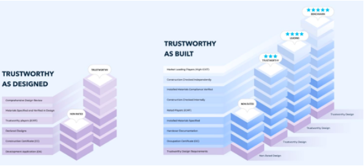

The reduction of physical assets into interlinked dependencies

Consistent methodology to achieve success in the market

Modern digital interface for BTI product

The KPMG Origins platform, designed for supply chain traceability, was focussed to tackle the immediate issue of the EUs incoming Deforestation Regulation. To enable importers of agirculture commodities into the EU to prove the source of origin down to the individual grain of rice.
Ontop of proof of Origin, importers will be required to provide proof of an absence of deforestation, modern slavery and other strict regulatory requirements.
Due to the scope of required data, manual validation, an expensive endevour, would be significantly supplmented with automated data collation and validation. Machine learning techniques in tandem with a more extensive use of GIS software was used to create realtime masks of deforestation on the farms against baseline's relevant to the EUDR requirements.
Deforestation events attached to farm could then be traced down the supply chain, and private organisations and governemnt regualtors alike could visualise real-time compliance alerts and make cost-effective actions to remedy.
This project was a great example of some of the opportunties for novel research I got to conduct during this time, academic rigor was applied to the model that was produced.
Working For:
- KPMG Origins
- Undisclosed South American Commodity Companies (Top 4)
- Undisclosed South East Asian Commodity Companies (Top 5)
Industry:
- Agriculture
- Supply/Value Chains
- Government Regulation
Core Technologies
- Image Segmentation of NDVI satalite images using UNets on Keras + Tensorflow
- PostGIS + Python GDAL
- SICAR, ESA and Sentinal Datastores
- Tableau Dashboarding
Building Up Skills
- Full product development lifecycle.
- Industry consultation.
- Government Regulation and Policy Development.
Key Outcomes
- Launching a complete software product with exxtensive industry consultation to achieve an NPS score of 8.5+.
- Onboarding over 35,000 organisations and 20,000 locations at launch.
- Handling, analysing and reporting on 13,500+ daily actions to product real-time (\<300ms delay) descriptive, predictive and anolomous analytics across 13 for purpose dashboards.
- Designing, building and maintaining an end-to-end data engineering and analytics platform to feed live dashboards in use by external users.